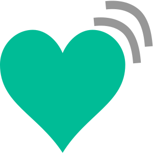
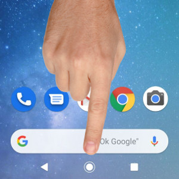

videollama.me
¿Cómo preparar el móvil o tablet de la persona mayor?
El objetivo es que la persona mayor sea capaz de conectarse por videollamada conociendo únicamente estas 4 acciones básicas.

El icono del corazón para acceder a la aplicación
El icono del corazón para acceder a la aplicación

El botón verde para iniciar la llamada
El botón rojo para colgar la llamada

El "círculo" de la barra de estado para volver a empezar
El "círculo" de la barra de estado para volver a empezar